<div class="example-container" [class.example-is-mobile]="mobileQuery.matches">
    <mat-toolbar color="primary" class="example-toolbar">
      <button mat-icon-button (click)="snav.toggle()"></button>
      <h1 class="example-app-name">Dashboard</h1>
      <div>
        <button mat-button [matMenuTriggerFor]="menu">Menu</button>
        <mat-menu #menu="matMenu">
          <button mat-menu-item>Item 1</button>
          <button mat-menu-item>Item 2</button>
        </mat-menu>        
      </div>
      <button mat-icon-button (click)="snav.toggle()"></button>
    </mat-toolbar>
  
    <mat-sidenav-container class="example-sidenav-container"
                           [style.marginTop.px]="mobileQuery.matches ? 56 : 0">
      <mat-sidenav #snav [mode]="mobileQuery.matches ? 'over' : 'side'"
                   [fixedInViewport]="mobileQuery.matches" fixedTopGap="56">
        <mat-nav-list>
          <!-- <a mat-list-item routerLink="." *ngFor="let nav of fillerNav">{{nav}}</a> -->
          <a mat-list-item [routerLink]="['./']">Dashboard</a>
          <a mat-list-item [routerLink]="['ordenes']">Órdenes</a>
          <a mat-list-item [routerLink]="['productos']">Productos</a>
        </mat-nav-list>
      </mat-sidenav>
  
      <mat-sidenav-content>
        <!-- <p *ngFor="let content of fillerContent">{{content}}</p> -->
        <router-outlet></router-outlet>
      </mat-sidenav-content>
    </mat-sidenav-container>
  </div>
  
  
  <!-- Copyright 2020 Google LLC. All Rights Reserved.
      Use of this source code is governed by an MIT-style license that
      can be found in the LICENSE file at http://angular.io/license -->